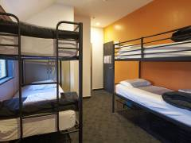
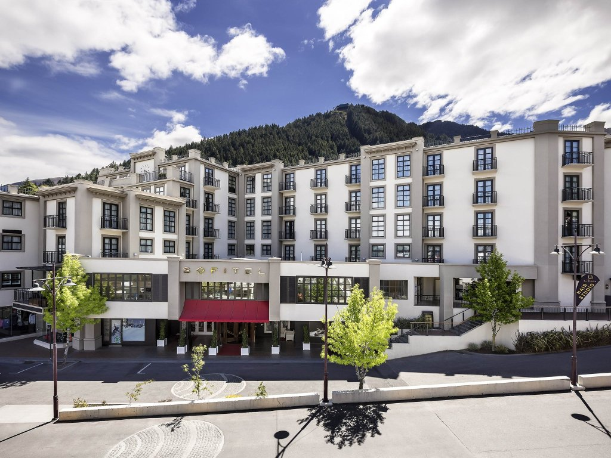

Backpackers
Bumbles backpackers
If you are looking for a small, relaxed & friendly place to stay in Queenstown with spectacular views and a waterfront location, this is it! Just a 2 minute stroll to downtown, we are a small laid back place where you'll meet some great people and get some sleep!
Call: +64 3 442 6098
Location: Brunswick Street, Queenstown, Otago 9300
Price: 25NZ$
Official Website
Nomads Queenstown
Nomads Queenstown is located in the heart of Queenstown, New Zealands popular South Island holiday city. Designed with all budget travellers in mind our Queenstown hostel has a variety of room types from small and large dorms with ensuite to private ensuite rooms.
Call: +64 3 441 3922
Location: 5 - 11 Church Street, Queenstown, Otago 9300
Price: 29NZ$
Official Website
Base Backpackers Queenstown
We have everything you could want under one roof - your bed, your entertainment and your adventure all catered for by the friendliest team in town. Whether you're travelling alone or with a group, we pride ourselves in ensuring each individual feels right at home.
Call: +64 3 441 1185
Location: 47-49 Shotover Street, Queenstown, Otago 9300
Price: 24NZ$
Official Website
Bed and Breakfast
Chalet Queenstown
Chalet Queenstown is a small boutique hotel located 5 minutes walk from the centre of Queenstown. With its superb views of the Remarkables, Lake Wakatipu and Queenstown Hill, Chalet Queenstown is the perfect location for your New Zealand holiday, whether you are skiing, snowboarding, jet boating, walking, dining, exploring or just relaxing.
Call: +64 3 442 7117
Location:1 Dublin Street, Queenstown, Otago 9300
Price: 225NZ$
Official Website
Larch Hill, Bed and Breakfast
As featured in ‘National Geographic Traveler’ magazines, Larch Hill Bed and Breakfast / Homestay is purpose built on an elevated site with SPECTACULAR VIEWS from all rooms and sundeck, overlooking Lake Wakatipu and the surrounding mountains. Situated in the Southern Lakes region of the South Island.
This unique Queenstown B&B provides a feeling of warmth and relaxation.
Call: +64 3 442 4811
Location: 16 Panners Way, Queenstown, Otago 9300
Price: 185NZ$
Official Website
Queenstown House Boutique B&B
Charming guest rooms with stylish decor and individual ambiance, all have spectacular lake or mountain views. Upmarket bedding and pillow choices, modern ensuite bathrooms include bathrobes and NZ toiletries.The spacious studio rooms have private outdoor patios.Bed & Breakfast or self catering apartments can accommodate up to 28 guests.
Call: +64 3 442 9043
Location: 69 Hallenstein Street, Queenstown, Otago 9300
Price: 250NZ$
Official Website
Cottages
Kinross cottage
Our self-contained cottage rooms are luxuriously homely & designed with YOU in mind! We have 40 acres of green surrounds with mountains, vines & ponds. For a relaxing escape near Queenstown, nothing matches the location, warmth & style of Kinross...
Call: +64 21 028 134 99
Location: 2300 Gibbston Highway (SH6), Queenstown, Otago 9371
Price: 275NZ$
Official Website
Queenstown Stoneridge Estate

Set tastefully apart, the Honeymoon Cottage at Stoneridge overlooks the vineyard with magnificent views of Lake Hayes and the alpine peaks beyond. Ornamental hand-forged iron and demolition timber add to the distinctive ambience, evoking imagery of Knights in shining armour.
Call: +64 3 442 1021
Location: 756 State Highway 6, Lake Hayes, RD1, Queenstown 9371
Price: 510NZ$
Official Website
Orchard Cottage
Situated 5 minutes from Arrowtown and only 15 minutes from Queenstown airport, Orchard Cottage is a two bedroom self contained and well appointed cottage offering everything you need for a relaxing break or a base from which to enjoy the many activities the area has to offer.
Call: +64 3 442 1158
Location: 556 Speargrass Flat RoadLake Hayes, R.D. 1, Queenstown 9371
Price: 195NZ$
Official Website
Hotels
Sofitel Queenstown Hotel & Spa
Experience a new level of sophistication at Sofitel Queenstown Hotel and Spa. Inspired by the charms of Paris with the warm hospitality inherent to Queenstown, be mesmerized by its tasteful combination of French antique elegance and local avant-garde design. Centrally located in the heart of Queenstown
Call: +64 3 450 0045
Location: 8 Duke St | PO Box 1797, Queenstown 9297
Price: 234NZ$
Official Website
The Dairy Private Hotel
The Dairy Private Hotel, Queenstown is your perfect escape. Our boutique hotel is in the centre of Queenstown and yet private and quiet. The property is renowned for its excellent service from the minute that you walk through the door. We are able to assist with everything during your happily and enjoyable stay.
Call: +64 3 4425164
Location: 10 Isle Street, Queenstown 9300
Price: 330NZ$
Official Website
Browns Boutique Hotel
This stylishly comfortable European inspired Bed & Breakfast is perfect Queenstown accommodation for your next vacation or ski holiday combining the intimate, timeless feel with genuine New Zealand hospitality. Free Wifi, Cooked/Continental breakfast, Sweeping Remarkables mountain views, free off-road tours
Call: +64 3 441 2050
Location: 26 Isle St, Queenstown, otago 9300
Price: 385NZ$
Official Website